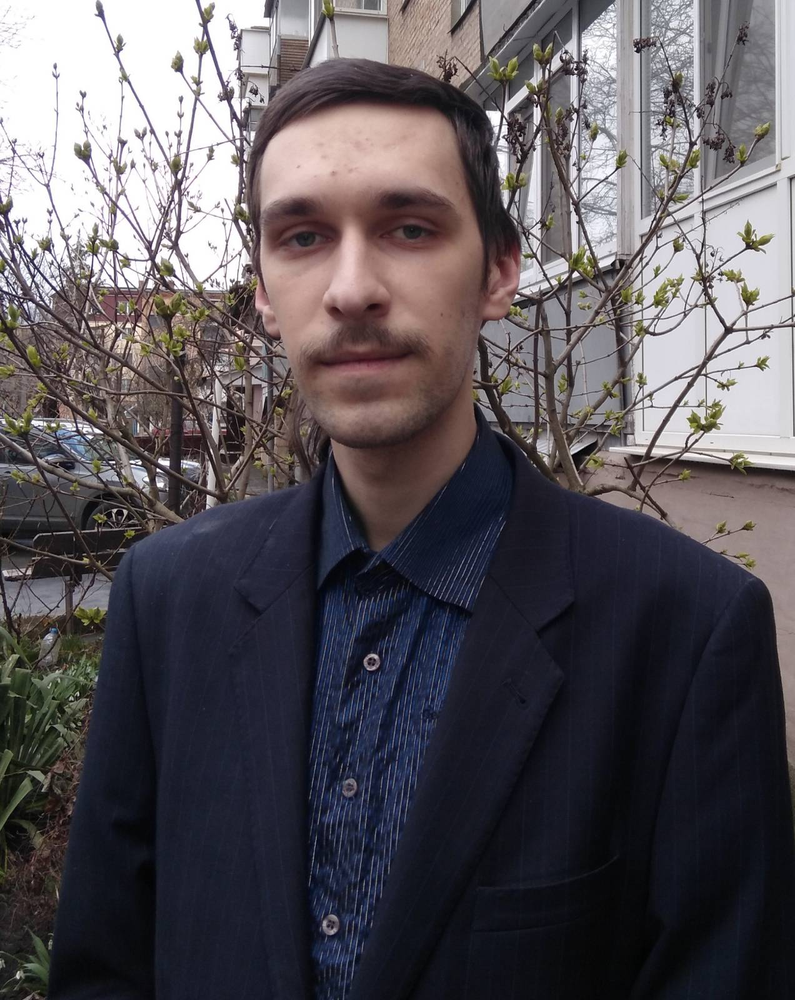

Моє ім'я Калиновський Валентин, друзі звуть мене просто Валік. Розкажу трохи про себе.
Народився я у 2001 році. Познайомився з комп'ютером у 5 років, з 10 років почав самостійно вивчати комп'ютерну грамотність (інтернету тоді ще не було, а в маленькому місті в ньому не було потреби, тому мені довелося вчитися на своїх помилках). Python став моєю першою мовою. Я почав вивчати його ще в січні 2018 року під час зимових канікул, але далеко не зайшов (не міг багато навчатися), а потім повернувся в училище і був змушений закинути його на наступні півтора року. У 2020 році я вступила до Центральноукраїнського Національного Технічного Університету на спеціальність Комп'ютерна інженерія. На даний момент я активно вивчаю C++, Python і фреймворк Qt.
Моє основне заняття — програмування, але крім цього я ще колись займався Оригамі (12-16 років), малював (10-12 років, потім інколи трохи малював до 17 років) і грав у шахи ♟️ (з дитинства і дотепер). Оригамі розвиває мислення і пам'ять, малювання розвиває творче око, а шахи розвивають мислення і логіку. Всі ці навички приходяться мені в програмуванні.
Я хочу чогось нового. Я вивчав C++ протягом 2,5 років, а зараз перейшов на Python. Я також розглядаю ще кілька мов. Основною графічною структурою є Qt. Також знайомий з Javafx і WindowsForms.
Моя рідна мова: 🇺🇦
Я вивчаю: 🇯🇵 🇬🇧